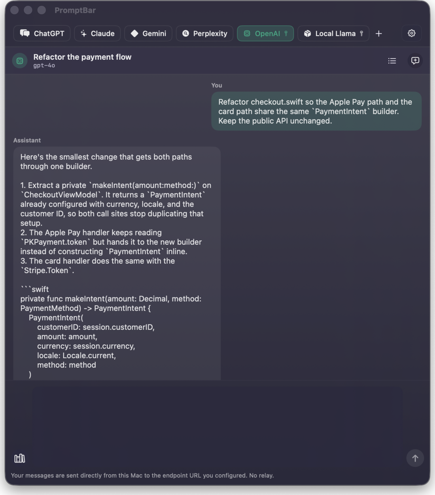
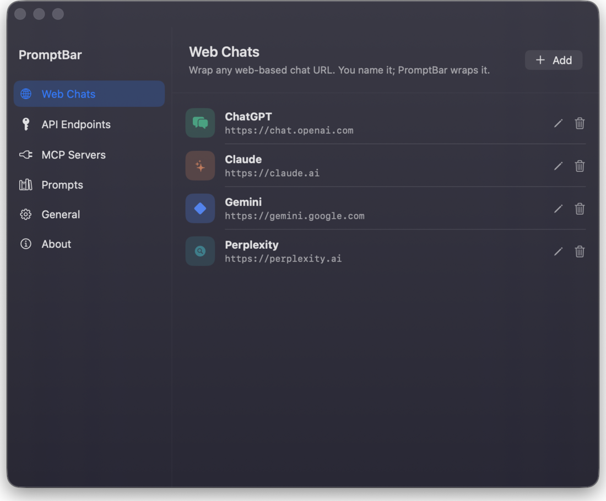
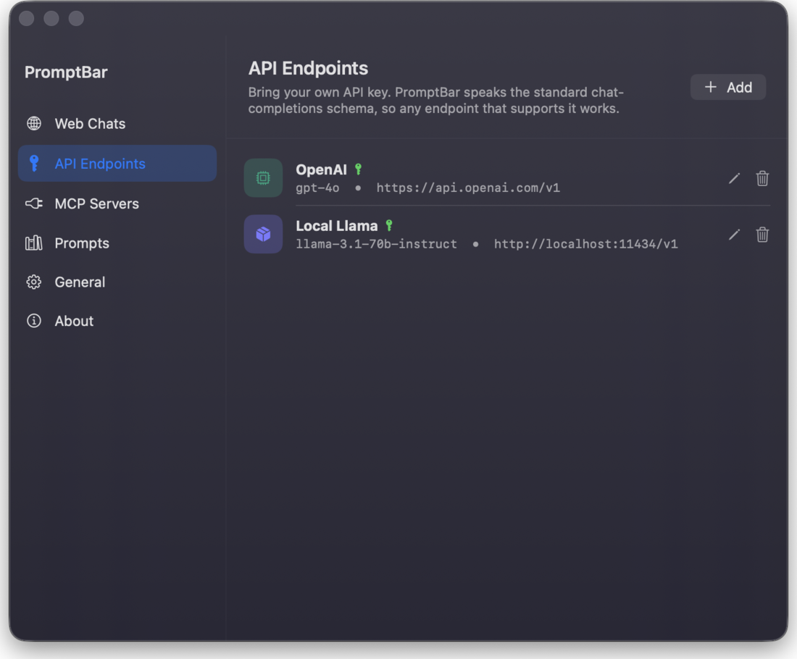
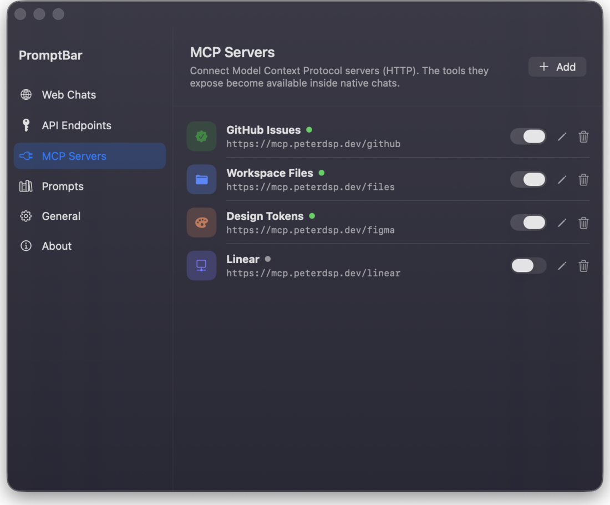
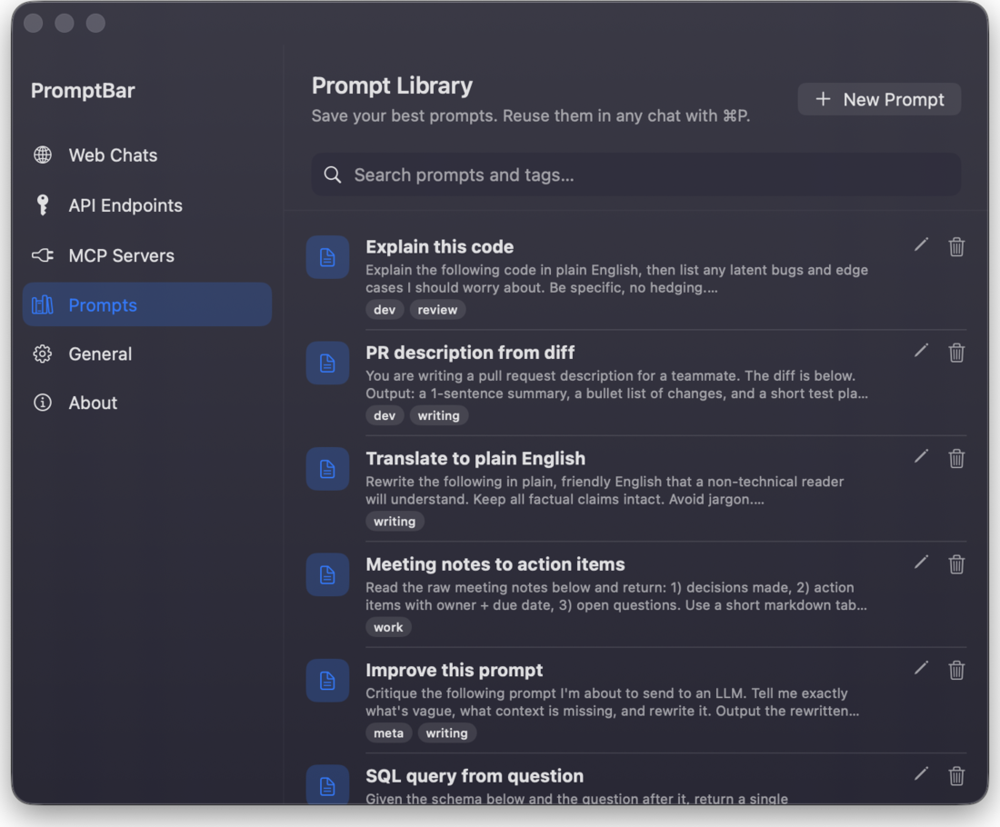

Any chat, any model.
One keystroke away.
PromptBar is a macOS menubar app that ships empty. Wrap any web chat in a popover, or stream natively from any OpenAI-compatible endpoint. Your key, your model, your data.
⌥⌘O to summon · macOS 26 Tahoe and later · signed and notarised

Cookies stay in this Mac's WKWebView. Nothing is uploaded, and there is no account to make.
You bring it.
It lives here.
What is inside
Wrap any web chat in a popover.
Paste a URL, pick a name, an icon and a colour. It runs in WKWebView and its cookies live on this Mac, not in a cloud.
Stream from your own endpoint.
Any OpenAI-compatible /chat/completions service or local runtime. Server-sent events, cancel mid-stream, straight from your Mac with no relay.
Reuse your best prompts anywhere.
Save a prompt once and call it into any chat with ⌘P. Search it, tag it, ship it.
Keep every key in the Keychain.
Not in UserDefaults, not in iCloud, not in a log file. Just the macOS Keychain, on this machine.
Stay out of the Dock entirely.
Menubar only. Summoned with ⌥⌘O, dismissed the moment you click away, and never an icon you have to close.
One popover. Every conversation.
Native streaming chat, web chats you wrapped yourself, your own API endpoints, MCP servers, and a keyboard-driven prompt library. All of it in the same panel under the menubar.




Name the endpoint.
Anything that speaks the OpenAI chat API: a hosted service, a company gateway, or a runtime on your own machine.
Private because it is empty.
PromptBar was rebuilt around one rule: your data leaves this Mac only when you send it, and only to where you send it. There is nothing in the middle because there is no middle.
No accounts.No analytics.No telemetry.No relay.
No remote config.No Firebase.No bundled providers.No Dock icon.
Pay once, or try it first.
- One-time, no subscription
- Activated with your Ko-fi email
- Direct build, updates from GitHub
- One-time, store-managed updates
- Family Sharing
- No trial, pay once at checkout
- Source available
- Signed and notarised builds
- No account needed to try it
Your bar is still empty.
That is the point. Put the two or three chats you actually use in it, give them a colour, and forget the app is there until you press the keys.